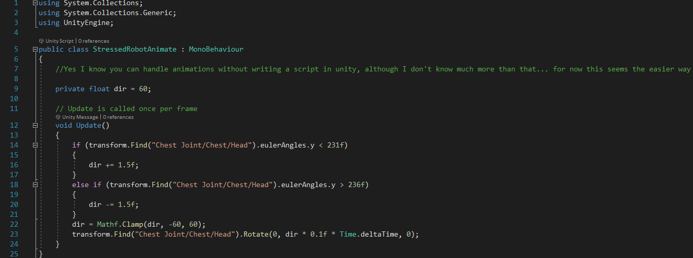
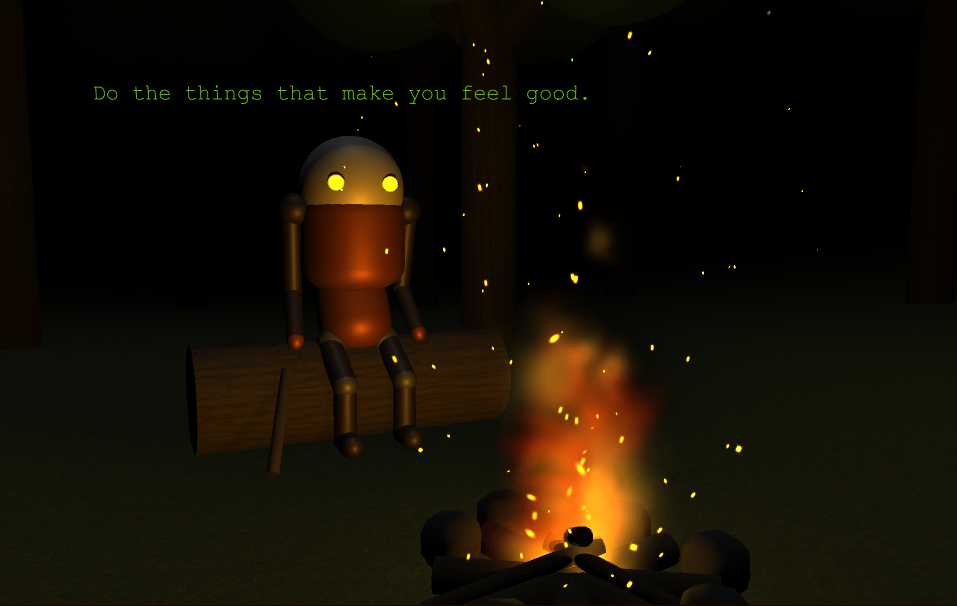
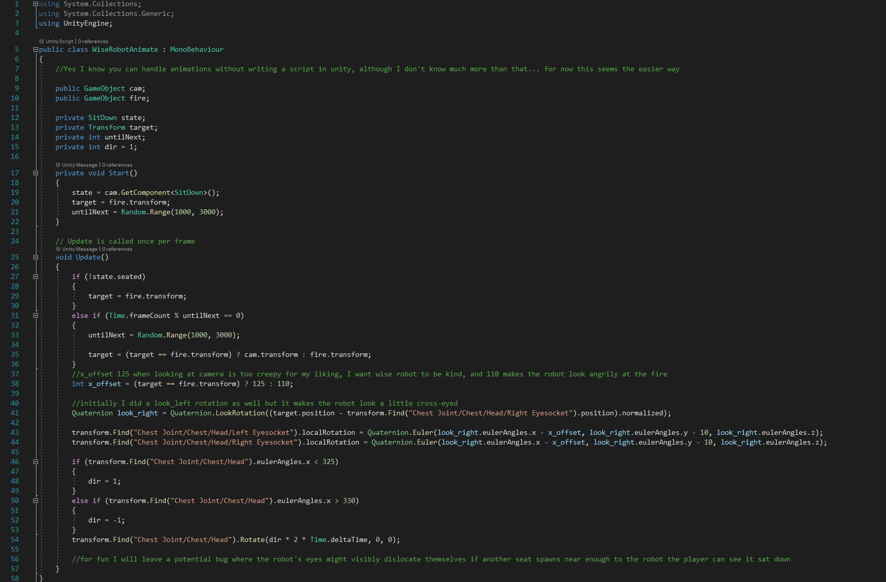

The Robots
Although the animations are subtle, I found that animating the robots make them seem a lot more "life like".
I decided the NPC's should be robots primarily because they would be simpler to design, but also so to better illustrate the characters
of the robots, using their eye colour to connote their personalities and differentiate them.
You can view all their dialogue
here.
Afriad Robot

The Afraid Robot, found at the "cosy fire", is constantly shifting their gaze. I wanted the Afraid Robot to represent those too afraid to
do what they wish, so they stay safe in their current position. Certainly, this is everyone at some point, but it needn't be, we should all strive to
act as we please, and shouldn't be stopped by others.
However, the Afraid Robot is also waiting for help before they go on their way, for someone or something to follow, referencing the trodden path as a guide.
This is a mistake, for the trodden path (the mainstream route through life), as described by the Stressed Robot, will not meaningfully guide them through the forest (life),
as they have no control over where they are going.
Can you tell I enjoy creating and explaining metaphors?! :D I know a metaphor shouldn't really be explained, and mine are certainly still open to interpretation (even in my own mind!),
so take from my vague explanations what you will :)
Click the code below to download the C# file:

Stressed Robot

The Stressed Robot slowly shakes from side to side, as they explain their mistake in following the path. I wanted the Stressed Robot to elaborate on the mistakes of those following the
trodden path, and almost make the player feel guilty for doing such. The Robot is positioned at the "end" of the path, so in order for the player to find it, they must've followed the
path. At this point they would be clueless to their mistake, and the Robot says they were too, initially. By directly addressing the player, the Robot allows the player to realise their
mistake, and hopefully understand their mistake in this game is a metaphor to a potential mistake in their attitude towards their life.
I feel like I'm back in high school, writing English essays!
For clarity, I would like to state that the overall message is that people should be, if not already, in firm control of their life, and independent in their decision as to how they
lead it. I think this is a perfectly acceptable, if hard to achieve, message, and I don't want to be cruel in conveying it, but I find making an example out of the Robot and potentially the player
an effective method of doing such. ( ＾v＾)
Click the code below to download the C# file:

Wise Robot

The Wise Robot can only be stumbled upon, as they are located in the dark heart of the forest. Because the player had to decide on their own path through the forest, as I recommend,
the Wise Robot can be seen as a reward for doing such.
The Robot explains philosophy of Optimistic Nihilism, what the game is based on, within the context of the forest.
This is to help the player to understand the message of the game, so they can interpret the game as a lesson.
Because it is so elegant, I paraphrased and stole some of the lines from Kurzgesagt's video on Optimistic Nihilism, which was the main
inspiration for this game.
The Wise Robot politely shifts his focus between the fire and the player;
I found that the Robot looking at the player helps the words he is saying to have more impact, but to constantly stare at the player may come off as intimidating, where as I wanted him
to seem understanding and kind.
Click the code below to download the C# file:

Text Rotate
For readability, I wrote a script to constantly make the words the Robots were saying (above their heads) face the player camera.
The script also automatically progresses through the dialogue while the player is close to the Robot, and resets the dialogue if the player has seen it all
and approaches the Robot again; otherwise if the player approaches again, the dialogue will continue where it left off.
Click the code below to download the C# file: